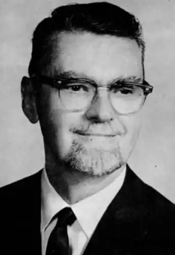
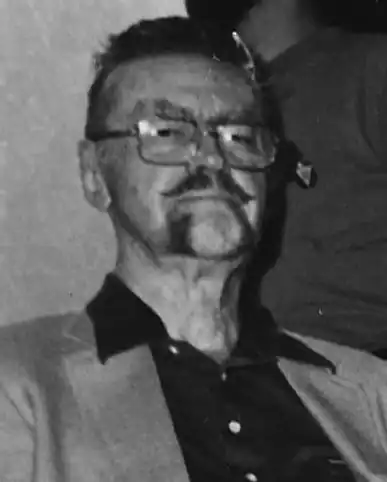

Лайон Спрег де Камп (Lyon Sprague de Camp) народився 27 листопада 1907 року в місті Нью-Йорку. Після школи продовжив навчання в California Institute of Technology і Stevens Institute of Technology. Під час Великої Депресії змінив безліч занять і став експертом по патентах, а під час Другої світової війни, як і багато інших, сумлінно служив.
Де Камп почав письменницьку кар'єру в тридцятих роках, пишучи розповіді для бульварних журналів. Його буквально заворожували герої жанру "swords & sorcery" і особливо — Конан-варвар Роберта Говарда. Завершивши безліч недописаних самим Говардом історій про Конана, де Камп продовжив славну сагу про варвара не менше вражаючим числом своїх творів, а також працював у співавторстві з іншим відомим письменником-фентезійщіком Ліном Картером (Lin Carter).
Безсумнівним успіхом став творчий союз де Кампа з письменником Флетчером Преттом, бібліотекарем, журналістом, військовим істориком. Їх перша велика спільна робота — роман "Дипломований чарівник" ( "The Incomplete Enchanter") був виданий в 1941 році. У книзі, складеної з трьох раніше публікувалися в журналах повістей, розповідалося про кумедні пригоди Гарольда Ши, мандрівного з одного міфічного світу в інший. Роман став класикою жанру і продовжує з успіхом перевидаватися в наші дні. Згодом де Камп і Претт періодично поверталися до полюбився герою. Іншою знаменитою роботою письменників став цикл оповідань "The Gavagan's Bar", в Росії практично невідомий. Сам де Камп, однак, складав не дуже охоче. Набагато більше його займали зовсім інші речі: він дуже багато подорожував, вивчав іноземні мови і говорив на кількох з них, захоплювався історією і написав книгу про великих містах минулого і древньої архітектури, писав і про життя Говарда Лавкрафта ( "Lovecraft: A Biography") , і про життя Роберта Говарда ( "Dark Valley Destiny: The Life of Robert E. Howard", у співавторстві з Катериною Крук (Catherine A. Crook) і Джейн Гріффін (Jane Griffin)), причому за дослідження останньої був удостоєний в 1984 році World Fantasy Special Award. Дружина Лайона Спрег де Кампа — Кетрін Аделаїда Крук (Catherine Adelaide Crook), на щастя, переконала його приділяти творчості більше часу, і багато в чому завдяки їй читачі зобов'язані появою пізніших творів письменника. Вона стала співавтором де Кампа, написавши разом з ним такі романи, як "Кістки Зазори" ( "The Bones of Zora"), "Мечі Зінджабана" ( "The Swords Of Zinjaban") і кілька інших ... Де Камп не здобув безлічі нагород за свої твори, але заслужив шану і повагу безлічі любителів фантастики: премії Gandalf Award Grand Master of Fantasy в 1976 році і Nebula Award Grand Master в 1978 — наочне тому підтвердження. Крім того, де Камп ще двічі нагороджувався за Свої не-фантастичні дослідження: International Fantasy Award за книгу "Lands Beyond", написану в 1953 році в співавторстві з Віллі Лєєм (Willy Ley), і Hugo Award в 1997 за автобіографічну роботу "Time & Chance: An Autobiography ". Лайон Спрег де Камп на сім місяців пережив свою улюблену дружину, померши 6 листопада 2000 в місті Плано (Plano), штат Техас. Тіло його було піддано кремації, а прах похований на Арлінгтонському національному кладовищі.